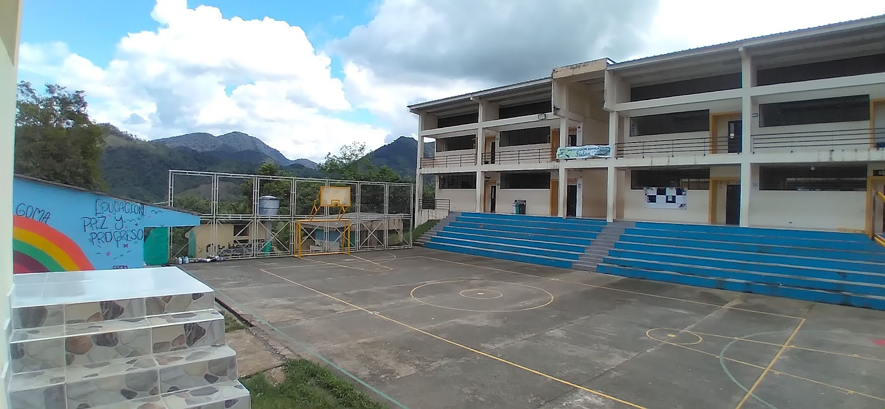
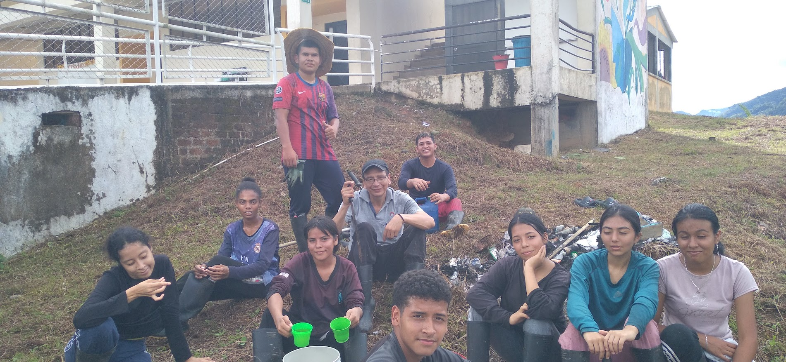

La Residencia Escolar de Sidón
La Residencia Escolar de la Institución Etnoeducativa de Sidón no es únicamente un lugar de alojamiento o pernoctación: es un entorno formativo, protector y de acompañamiento integral que hace posible el acceso y la permanencia de estudiantes de zonas rurales dispersas.
Debido a las difíciles condiciones geográficas, los caminos de herradura y los prolongados trayectos fluviales por el río Patía, muchos niños y jóvenes de veredas distantes no podrían culminar sus estudios secundarios sin el cobijo de la residencia escolar. Aquí encuentran alimentación balanceada, acompañamiento docente en tareas extraescolares, dormitorios seguros y convivencia fraterna.
Construido participativamente desde un enfoque formativo y restaurativo, alejándose de visiones puramente punitivas y priorizando la reparación de relaciones, la autorregulación y el aprendizaje colectivo.

Espacios seguros y protectores para estudiantes rurales en Sidón.
Pilares del Manual de Convivencia
- Cuidado Mutuo: Cada estudiante es corresponsable de la seguridad, el bienestar y el respeto hacia sus compañeros.
- Uso Compartido y Aseo: Hábitos diarios de orden, limpieza de dormitorios y cuidado del mobiliario.
- Autonomía Progresiva: Desarrollo de hábitos de estudio independiente, puntualidad y responsabilidad personal.
- Justicia Restaurativa: Espacios de mediación dialógica cuando surgen diferencias entre residentes.
Protocolos de Seguridad y Espacios Protectores
Lineamientos estrictos para salvaguardar la integridad física, emocional y psicológica de nuestros estudiantes.
Prevención de Violencias
Tolerancia cero frente a cualquier tipo de acoso escolar (bullying), discriminación racial, violencia de género o castigo corporal. Rutas de atención inmediata con autoridades competentes.
Comité de Convivencia Escolar
Instancia institucional activa integrada por la rectora, orientadores, representantes de docentes, padres y personería estudiantil para resolver conflictos y fomentar el buen trato.
Protección de Datos y Menores
Tratamiento confidencial y reservado de historias familiares, situaciones sensibles y datos personales, en estricto cumplimiento de la Ley 1581 de 2012 y el Código de Infancia.
La Familia: Primer Territorio de Paz
El proceso formativo de la Institución Etnoeducativa de Sidón no es posible sin la participación activa y comprometida de los padres, madres y cuidadores de cada vereda.
A través de las Escuelas de Padres, las mingas de mejoramiento de sedes escolares y los encuentros comunitarios, estrechamos lazos para que los valores de respeto y perseverancia aprendidos en casa se fortalezcan en el aula de clases.

Jóvenes de Sidón compartiendo en espacios formativos de integración y compañerismo.